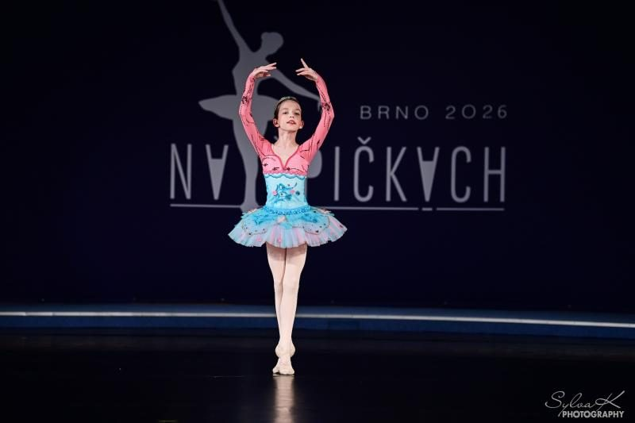
Mezinárodní baletní soutěž pro děti a mládež
Na špičkách
Soutěž v klasickém tanci a contemporary v Brně. Mladí tanečníci z Česka i ze zahraničí tu od roku 2015 předvádějí výsledky své práce odborné porotě.
Foto: SylvaK Photography, ročník 2026
Poslední ročník
Proběhlo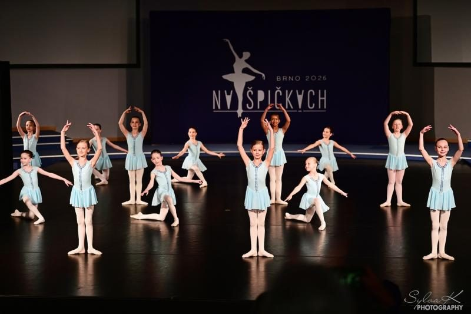
Ročník 2026
Program a místo 2026Údaje na webu jsou archivem posledního zveřejněného ročníku 2026. Termín, pravidla, poplatky a přihlášku 12. ročníku oznámí pořadatel samostatně; mohou se lišit.
Proč se zúčastnit
- Hodnocení odbornou porotouPorotu tvoří profesionální tanečníci, pedagogové a choreografové.
- Ocenění v každé kategorii1., 2. a 3. místo, u amatérů i čestná uznání a zvláštní ocenění poroty.
- Setkání tanečníků a pedagogůVýměna zkušeností mezi žáky i lektory a nové kontakty.
- Objevování talentůVýsledky dlouhodobé práce vidí zkušení odborníci.
- Srovnání s ostatnímiV roce 2025: 526 vystoupení, 974 tanečníků z 53 škol.
Kategorie
Archiv pravidel ročníku 2026
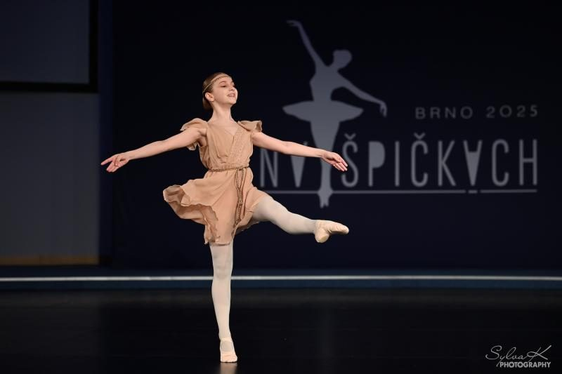
Amatéři
Baletní školy, ZUŠ, amatérské soubory a jednotlivci. Klasický tanec A–C, contemporary modern D–F.
- 1. kat. 4–7 let
- 2. kat. 8–9 let
- 3. kat. 10–11 let
- 4. kat. 12–13 let
- 5. kat. 14–16 let
- 6. kat. 17–25 let
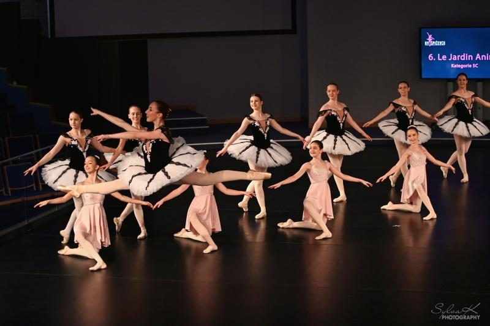
Profesionálové
Studenti tanečních konzervatoří a škol s akreditací. Klasika G–I, moderna J–L.
- 4. kat. 12–13 let
- 5. kat. 14–16 let
- 6. kat. 17 let – do konce studia
Najděte svou kategorii
Podle archivních pravidel ročníku 2026; pravidla dalšího ročníku se mohou lišit. U duet, trií a skupin zadejte průměrný věk bez zaokrouhlení.
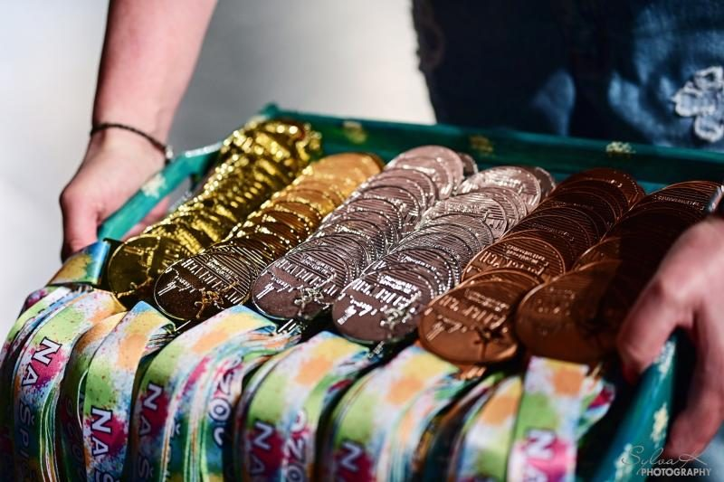
Přihláška
Přihlášky ročníku 2026 jsou uzavřené (uzávěrka 3. 4. 2026). Přihlášku na další ročník zveřejní pořadatel.
Postup a kontakt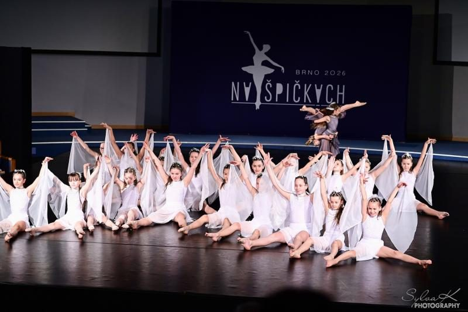
Výsledky
Výsledkové listiny ročníků 2015–2025 podle soutěžních dnů a statistiky ročníků.
Výsledky ročníků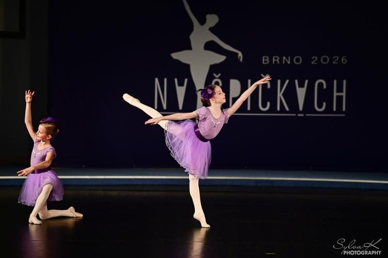
Fotogalerie
Fotografie z jedenácti ročníků. Ročník 2026 si prohlédnete přímo zde.
Zobrazit galeriiRočníky 2015–2026
- 11. ročník 202624.–26. 4. 2026
- 10. ročník 202511.–13. 4. 2025
- 9. ročník 202427.–28. 4. 2024
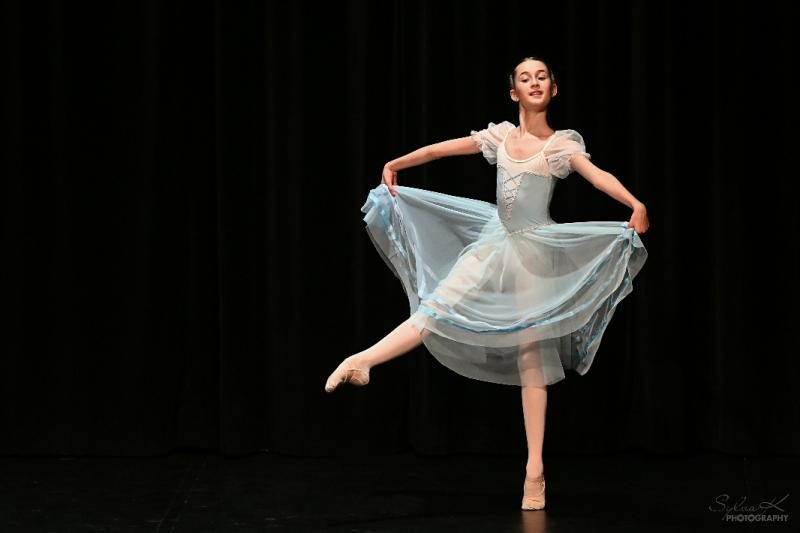
8. ročník 202315.–16. 4. 2023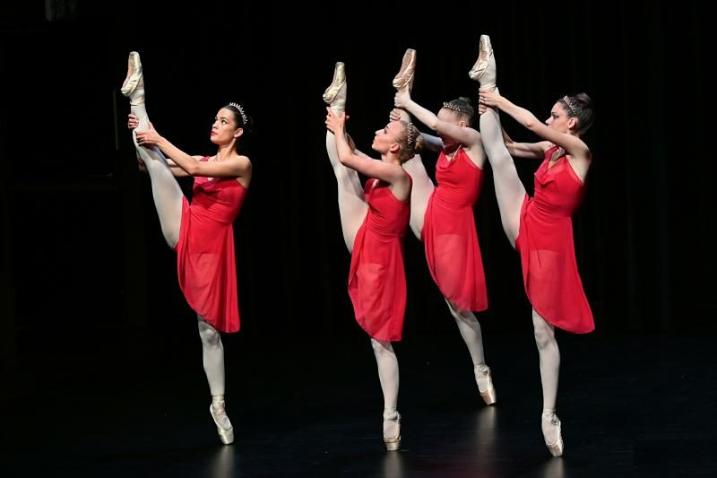
7. ročník 202223.–24. 4. 2022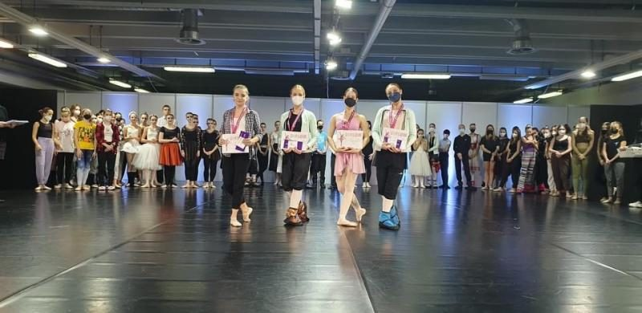
6. ročník 202126.–28. 11. 2021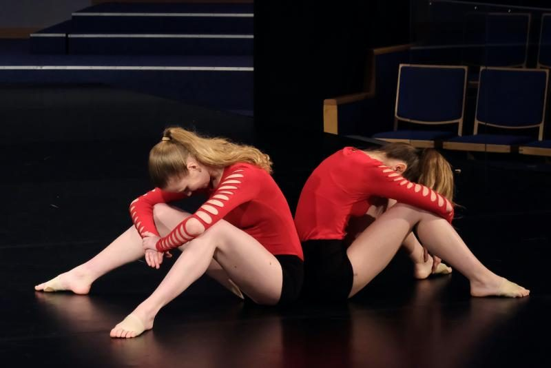
5. ročník 201927.–28. 4. 2019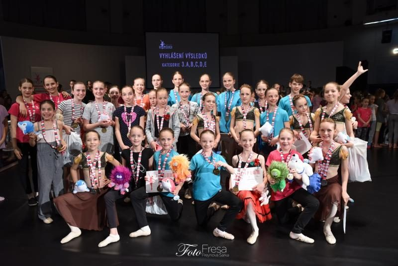
4. ročník 201828.–29. 4. 2018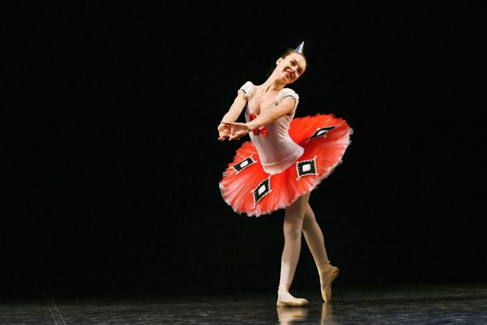
3. ročník 201729.–30. 4. 2017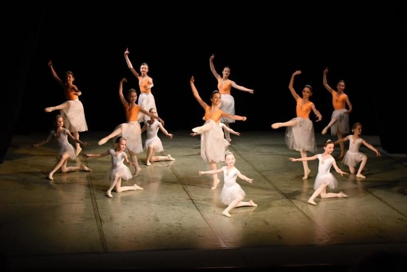
2. ročník 201630. 4.–1. 5. 2016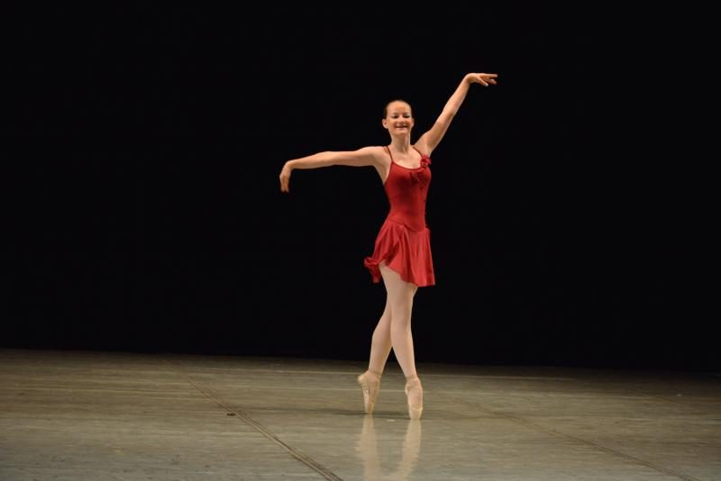
1. ročník 201523.–24. 5. 2015
Časté dotazy
Kdo se může soutěže zúčastnit?
Amatéři ve věku 4–25 let z neprofesionálních baletních škol, tanečních oborů ZUŠ, amatérských souborů i jednotlivci. Od 5. ročníku také studenti tanečních konzervatoří a škol s akreditací k výchově profesionálních tanečníků (kategorie 4–6). Soutěžit mohou tanečníci z Česka i ze zahraničí.
Jak probíhá přihlášení?
Škola vyplní přihlášku v Excelu a pošle ji na naspickach@filianek.cz. Hudbu ve formátu MP3 posílá na hudba@filianek.cz. U ročníku 2026 byla uzávěrka 3. 4. 2026 a přihlašování je uzavřené. Postup přihlášení
Jaké jsou kategorie?
Amatéři soutěží v 6 věkových kategoriích (4–7, 8–9, 10–11, 12–13, 14–16 a 17–25 let) a podkategoriích A–F. Profesionálové ve 3 kategoriích (12–13, 14–16, 17 let až do konce studia) a podkategoriích G–L. Kategorie amatérů · Kategorie profesionálů
Kolik stojí účast?
Ročník 2026: účastnický poplatek 400 Kč za soutěžícího (platí se jednou) a startovné za každou choreografii 350 Kč (sólo), 250 Kč (duet, trio, kvartet) nebo 150 Kč (skupina) za soutěžícího. Poplatky amatérů · Poplatky profesionálů
Jak dlouhé smí být číslo a jak pojmenovat hudbu?
Sólo, duet, trio a kvartet nejvýše 2,5 minuty, skupina nejvýše 3,5 minuty. Nahrávku pojmenujte: Kategorie a podkategorie_Popis nástupu (N, H)_Název tance_Škola.
Kde najdu výsledky?
Výsledkové listiny ročníků 2015–2025 jsou ve formátu PDF podle soutěžních dnů. Výsledky a ročníky
Pořadatel a podpora
Soutěž pořádá Baletní škola Filiánek, Filiánek, z. s. Ročník 2025 se konal za finanční podpory statutárního města Brna a Jihomoravského kraje.
- Statutární město Brno
- Jihomoravský kraj